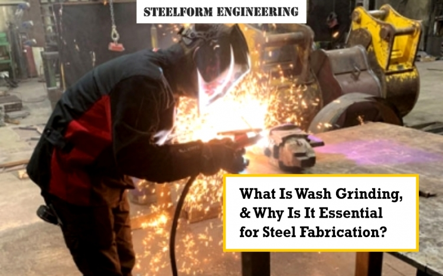

What Is Wash Grinding, and Why Is It Essential for Steel Fabrication
Steel fabrication is a complex process that transforms raw steel into usable structures or components. From bridges and buildings to intricate machinery and everyday tools, steel plays a crucial role in modern life. Within this intricate process, various techniques are employed to achieve the desired shape, size, and finish. One such technique, often overlooked but critically important, is wash grinding. This blog delves into what wash grinding is, its significance in steel fabrication, and the numerous benefits of wash grinding for steel, with a special mention of how companies like Steelform Engineering utilise this process.
Defining Wash Grinding
Wash grinding is a specialised grinding process used in steel fabrication to remove excess weld metal, smooth weld seams, and prepare steel surfaces for further finishing, such as painting or coating. It involves using abrasive grinding wheels or discs, often with the assistance of a coolant (hence the "wash" aspect), to achieve a smooth, even surface. Unlike rough grinding, which focuses on bulk material removal, wash grinding is a precision process aimed at refining the surface finish and ensuring structural integrity.
Importance of Wash Grinding in Steel Fabrication
Wash grinding plays a crucial role in several aspects of steel fabrication:
- Improving Aesthetics: Wash grinding removes the unevenness and roughness of weld seams, resulting in a smooth, aesthetically pleasing surface. This is particularly important for visible structural elements or architectural steelwork where appearance matters.
- Enhancing Structural Integrity: Proper wash grinding eliminates stress concentrations that can occur at weld joints due to irregular surfaces. By smoothing these areas, the risk of fatigue and cracking is reduced, leading to increased structural integrity and longevity of the fabricated steel component.
- Preparing for Coatings: Before applying protective coatings like paint, powder coating, or galvanisation, the steel surface must be properly prepared. Wash grinding creates an ideal surface profile for these coatings to adhere effectively, ensuring long-lasting protection against corrosion and environmental damage. Rough surfaces can lead to poor coating adhesion and premature failure.
- Facilitating Inspection: Smooth, even surfaces created by wash grinding make it easier to inspect welds for defects. Visual inspection, as well as non-destructive testing (NDT) methods like ultrasonic testing, is more effective on surfaces that have undergone wash grinding.
- Meeting Quality Standards: Many industries and applications have stringent quality standards for surface finish and weld integrity. Wash grinding helps steel fabricators meet these requirements, ensuring the final product is compliant and fit for purpose.
Benefits of Wash Grinding for Steel
The benefits of wash grinding for steel are numerous and contribute to the overall quality and performance of fabricated steel products:
- Improved Surface Finish: Wash grinding provides a smooth, even surface finish, enhancing the aesthetic appeal of the steel component.
- Increased Fatigue Resistance: By eliminating stress concentrations at weld joints, wash grinding improves the fatigue resistance of the steel structure, making it more durable under cyclic loading.
- Enhanced Coating Adhesion: The smooth surface created by wash grinding promotes better adhesion of protective coatings, extending the lifespan of the coating and the steel component.
- Easier Inspection: Smooth surfaces facilitate visual and NDT inspection, ensuring weld quality and structural integrity.
- Compliance with Standards: Wash grinding helps steel fabricators meet industry and application-specific quality standards.
- Reduced Risk of Cracking: By removing irregularities and stress points, wash grinding minimises the risk of cracking in and around welds.
- Improved Dimensional Accuracy: In some cases, wash grinding can be used to achieve precise dimensional tolerances on fabricated steel components.
Wash Grinding in Practice: The Steelform Engineering Example
Companies like Steelform Engineering, specialising in steel fabrication, understand the importance of wash grinding services in delivering high-quality products. They incorporate wash grinding into their fabrication processes to ensure that their steel structures and components meet the required aesthetic, structural, and quality standards. From preparing surfaces for painting on structural steel to smoothing welds on precision components, wash grinding is a vital part of their commitment to excellence. By employing skilled technicians and utilising appropriate grinding equipment, Steelform Engineering and other leading steel fabricators maximise the benefits of wash grinding, producing durable, reliable, and visually appealing steel products.
Conclusion
Wash grinding is a crucial, yet often underestimated, process in steel fabrication. Its contribution to aesthetics, structural integrity, coating adhesion, and quality control makes it indispensable for a wide range of applications. The benefits of wash grinding for steel are substantial, ultimately leading to higher quality, more durable, and aesthetically pleasing steel products. As exemplified by companies like Steelform Engineering, incorporating wash grinding into fabrication processes is a testament to a commitment to quality and excellence in steel fabrication.